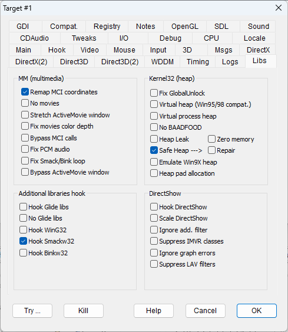

|
Remap MCI coordinates |
REMAPMCI |
Finds and scales the movie coordinates that may be embedded in the MciSendString command string. It may fix movie sizes when they are played using the MciSendString WinMM call. |
|
No movies |
NOMOVIES |
Skips movies whenever possible - that is, when performed through explicit movie handling calls. |
|
Stretch ActiveMovie window |
STRETCHMOVIES |
Several window classes are devoted to play multimedia. This flag detects the known multimedia windows and stretches their size to cover the full main window area. |
|
Fix movies color depth |
FIXMOVIECOLOR |
Fixes the color depth of VfW (Video for Windows) movies by forcing their value to the color depth of the virtual desktop. |
|
Bypass MCI calls |
BYPASSMCI |
Several games perform MCI operations (e.g., to check for a CD-ROM) that are not essential and may cause errors. This flag bypasses MCI calls when possible and returns a positive result. |
|
Fix PCM audio |
FIXAUDIOPCM |
To support stereo PCM audio by downgrading the audio channels to 1 (mono). Fixes "Capcom Arcade Hits Vol 1" audio problems. |
|
Fix Smack/Bink loop |
FIXSMACKLOOP |
Fixes a Smack/Bink loop by inserting ProcessMessage and blit operations between frames. During the playback of Smack movies (which typically have a .smk extension), the screen may not get updated, which is detected by the OS and killed as a non-responsive program. The intro movies in the game "Galapagos" benefit from this flag. |
|
Bypass ActiveMovie Window |
BYPASSACTIVEMOVIE |
The ActiveMovie window is not remapped to the main window. |
|
Hook Glide libs |
HOOKGLIDE |
Enables Glide API hooking. NOTE: DxWnd does not have a built-in Glide wrapper, but nGlide seems to work quite well with DxWnd. TIP: If you are using nGlide, also try changing the DirectX Version Hook to DirectX9. |
|
No Glide libs |
SUPPRESSGLIDE |
Pretends that there is no Glide support, even when emulated by the Glide wrappers. In detail, the target program will get an error when trying to link the Glide libraries such as "Glide.dll", "Glide2x.dll" or "Glide3x.dll". |
|
Hook WinG32 |
HOOKWING32 |
Hooks the WinG32 library. |
|
Hook Smackw32 |
HOOKSMACKW32 |
Hooks Smackw32 to avoid tight looping, allowing debugging, tracing, and future expansions. When this flag is active, the SmackOpen call activates a thread that ensures that all frames are refreshed to the screen (similar to the "Auto Primary Surface Blit" option in DirectDraw Surface Handling). |
|
Hook Binkw32 |
HOOKBINKW32 |
Same as above but for Binkw32 videos. |
|
Hook DirectShow |
HOOKDIRECTSHOW |
Hooks some DirectShow classes and methods to ensure better compatibility with videos. |
|
Scale DirectShow |
SCALEDIRECTSHOW |
Performs scaling of the screen coordinates to match the window size. |
|
Ignore add. filter |
IGNOREADDFILTER |
bypasses the AddFilter method returning an error. This flag should be used whenever the program tries to use some troublesome filter while the standard ones would provide a better result. |
|
Suppress IVMR classes |
SUPPRESSIVMR |
DirectShow can render using base filters (based on GDI) or IVMR classes (based on DirectDraw or Direct3D). Pretending that the IVMR classes are not available ( returning a E_NOINTERFACE error ) can be a way to switch to base filter and get a better compatibility. |
|
Ignore graph errors |
IGNOREGRAPHERRORS |
Force a positive return code for DirectShow graph building methods so that some operations could be terminated though perhaps in a incomplete way. This can hopefully skip operations like showing an intro video and let the program continue afterwards. |
|
Suppress LAV filters |
NOLAVFILTERS |
Pretends that LAV filters are not supported in the current environment. In some cases this makes the program to select alternate filters that in the DxWnd scenario can give better or more compatible results. |
|
Fix GlobalUnlock |
FIXGLOBALUNLOCK |
Fixes a reported problem of the 16-bit GlobalUnock() API's 32-bit port. In some cases, it never returns the expected value, causing game crashes or endless loops. |
|
Virtual Heap (Win95/98 compat.) |
VIRTUALHEAP |
Remaps memory requests from heap to malloc requests for any additional heap but the default process heap. It is needed for some "Wing Commander" games to work. |
|
Virtual Process Heap |
VIRTUALPROCHEAP |
Also forces the malloc replacement for the process heap despite the fact that it is not possible to intercept its creation. Requires the VIRTUALHEAP flag to be set. |
|
NO BAADFOOD |
NOBAADFOOD |
Avoids virtual heap initialization to 0xBAADFOOD value, setting it to 0x0 instead. It is needed to run "Independence Day". |
|
Heap leak |
HEAPLEAK |
Bypasses all HeapFree calls. It helps eliminating exceptions while freeing heap block when the heap is corrupted, but at the cost of a systematic memory leakage since memory blocks will never be freed until the process is terminated. |
|
Safe heap |
SAFEHEAP |
A tentative fix for heap operations. Each heap allocation is wrapped with begin/end markers and a length field so that it becomes possible to check for heap integrity and skip operations that may lead to exceptions. Unfortunately, it is not possible to wrap all memory segments (some are pre-allocated before DxWnd hook) so in some cases, the integrity checks inevitably fail. In any case, it seems to give some benefit. It must be used with early hooking only. |
|
Emulate Win9X heap |
EMULATEWIN9XHEAP |
Emulates the behavior of the Microsoft shim: "EmulateHeap". |
|
Heap pad allocation |
HEAPPADALLOCATION |
Similar to the Microsoft shim with the same name. Every heap allocation is increased by a fixed size so that bugged programs have less chances to corrupt the heap at the cost of some extra memory usage. |